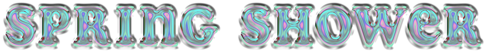
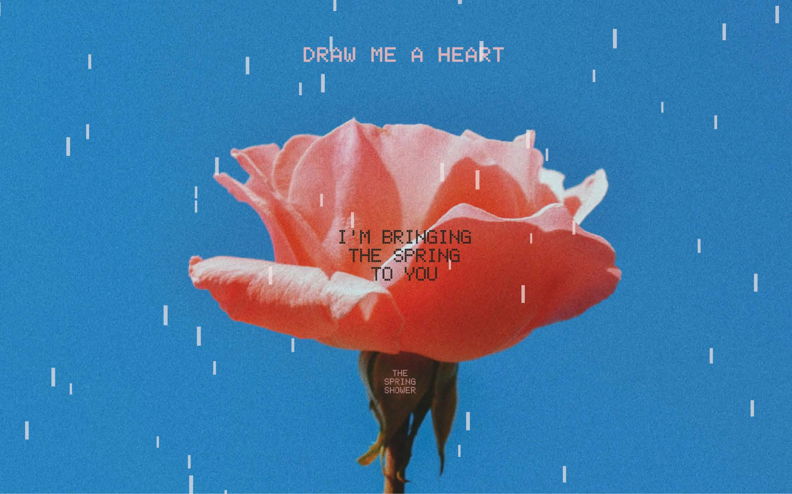
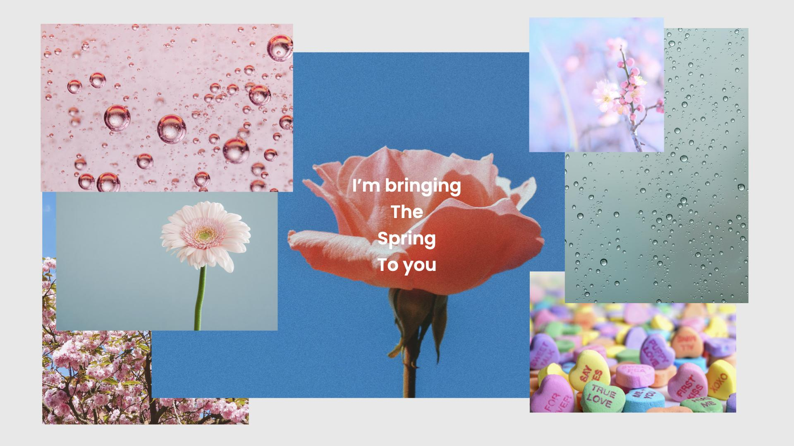
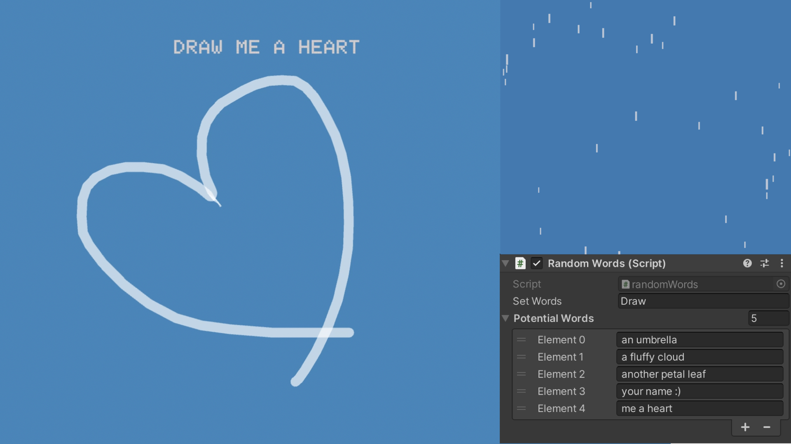

<!DOCTYPE html>

<html lang="en">
    
    <head>

        <meta charset="utf-8" name="viewport" content="width=device-width, initial-scale=1.0">
        <link rel="stylesheet" type="text/css" href="../style.css">
        <script type="module" src="../three.js" defer></script>

    

        <title>MINNIE PARK</title>

           <!-- Favicon -->
           <link rel="apple-touch-icon" sizes="180x180" href="../favicon/apple-touch-icon.png">
           <link rel="icon" type="image/png" sizes="32x32" href="../favicon/favicon-32x32.png">
           <link rel="icon" type="image/png" sizes="16x16" href="../favicon/favicon-16x16.png">
           <link rel="manifest" href="../favicon/site.webmanifest">


        <style>
            body {
                background-color: rgb(40, 92, 143);
                background-image: linear-gradient(to right, rgba(255, 255, 255, 0), rgba(170, 91, 107, 0.925));
                background-image: cover;
                
            }
        </style>
        
    </head>

    <body>
        <header>
            <div id="header-section">
                <nav>
                    <ul>
                        <li><a href="../index.html"></a></li>
                    </ul>
                </nav>
                
                <audio id="bgm" src="../audio/rain.mp3" autoplay loop></audio>
                <script>
                    var bgm = document.getElementById("bgm");
                    bgm.volume = 0.3;
                    var musicPlay = document.getElementById("musicPlay");
                    musicPlay.onclick = function(){
                        if(bgm.paused){
                            bgm.play();
                            musicPlay.src="../img/musicnote.png";
                        } else {
                            bgm.pause();
                            musicPlay.src="../img/pause.png";
                        }
                    }
                </script>
            </div>
        </header>
<!-- 
    <h1 id="top"></h1>
        <br><br><br>
    <div class ="text-wrapper">
        <h2>THE UGLY BLUE BUTTON TO PLAY THE GAME</h2>
        <h2>THE UGLY BLUE BUTTON TO PLAY THE GAME</h2>
        <h2>THE UGLY BLUE BUTTON TO PLAY THE GAME</h2>
        <h2>THE UGLY BLUE BUTTON TO PLAY THE GAME</h2>
    </div> <br><br>

        <div id="embed">
            <iframe id='webgl_iframe' frameborder="0" allow="autoplay; fullscreen; vr" allowfullscreen="" allowvr=""
    mozallowfullscreen="true" src="https://play.unity.com/webgl/780195d3-f4ce-4db2-849a-1a0090444106?screenshot=false&embedType=embed"  width="810"
    height="515" onmousewheel="" webkitallowfullscreen="true"></iframe></div>
    
    <br><br><br><br><br><br><br>

<div class="contentBox" >
    <h3>WHAT IS IT?</h3>

    <br><br>
    <p2>SPRING SHOWER</p2>
    <p>
    is a minimalist game where the player draws or writes with the mouse control along with the direction given at the start of the game. 
    <br><br>
    This game provides the opportunity to remind of a relaxing and warm feeling on one rainy day in spring.
    </p><br><br></div>

  

</div>
<div class="contentBox" >
    <h3>DESIGN APPROACH</h3>

    <br><br>

    <p2>Concept Design: Imagism</p2>
      <p>
        Imagism is not about the actual image or photography itself, rather it’s offering users to have certain emotions or feelings in their minds. Just as how some of the word combinations work so powerfully together, for instance, chimney and hot chocolate, or ocean waves and sunglasses.
     </p><br>
      <p>
        I tried to convey my feelings and emotions of one good day in springtime, especially when there is a spring shower. The game is designed with a few key elements which work effectively together to illustrate these feelings.
    </p><br>
    <br><br>
    <p2>Technical Design: Particle System and One Click Drawing</p2>
    <p>
    The game’s goal is to draw a given object with a one click drawing. The rain effect was created with the particle system. I wanted to make sure that the size and the speed of this rain effect is properly designed so it still feels like it’s a light spring shower, rather than a heavy rain storm, so it feels refreshing and soft, not terrifying.
    </p><br>

    <p2>Aesthetics, Colour Palette and Sound Design</p2>
    <p>
    All the design was focused on creating the warm feeling during the play. The feeling of which this game is providing to players is the key factor of the game. To convey warm, refreshing, romantic, all the elements are carefully applied. They are spring rain, soft raining sound, a flower, the blue sky and the words which says, “I’m bringing the spring to you.”
    </p><br><br>
  </div>

<div class="contentBox" >
    <h3>REFLECTION</h3>
<p>
    My original plan was to add scripts or rigid bodies and colliders to the lines and particles, so that the lines could actually collect the rain drops or block the rain if the umbrella is drawn. It is challenging to add these effects but I will come back to further develop this game. 
    <br><br>
    Now when I look at one of these first games I created during this semester, I do really see how much I have learned from creating all 6 games, in technical term as well as how I approach the design of the games. It really does take many practices and failures to finally be more comfortable with all the softwares like Unity, Blender or Visual Studio Code to create great games. I’ve learned how to be more careful and alert with the small details like textures, text font, sizes or colours, or player controls! Which may affect the entire experience of the game. Well, it’s a minimal game, so now I know that they are not small after all. I’m really thankful for this opportunity to grow and explore more to have more clarity in myself as a designer, so I can really be more confident with my design. I think I really learned a lot from this course. :) 
</p><br><br>
</div><br>

<div class="bottomPage">
    <ul><li><a href="#top"></a></li></ul>
    <ul><li><a href="../index.html"></a></li></ul>
    <ul><li><a href="contact.html"></a></li></ul>
</div><br> -->

</body>

</html>

